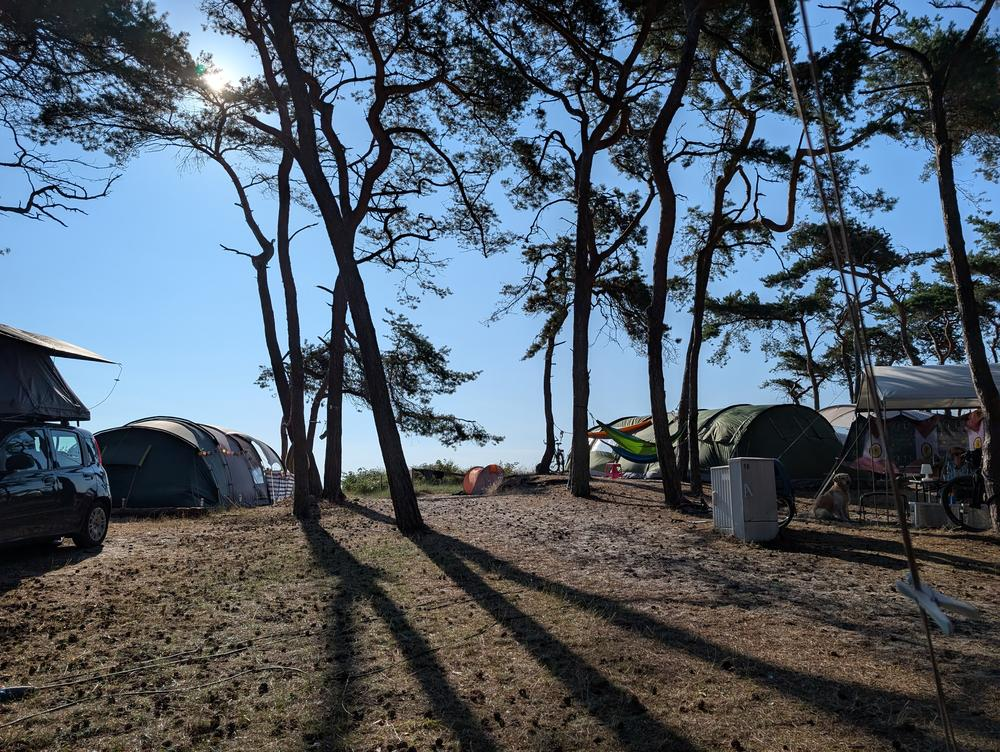
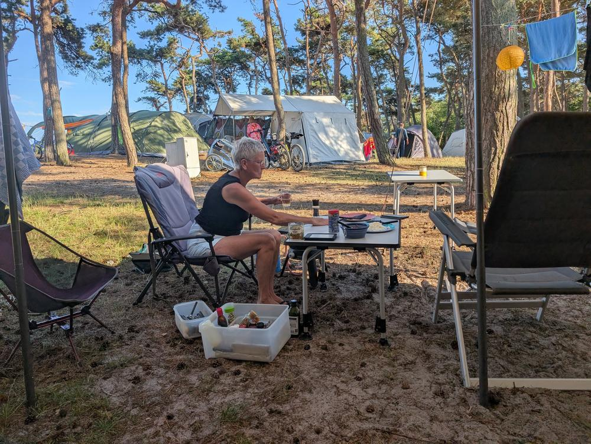
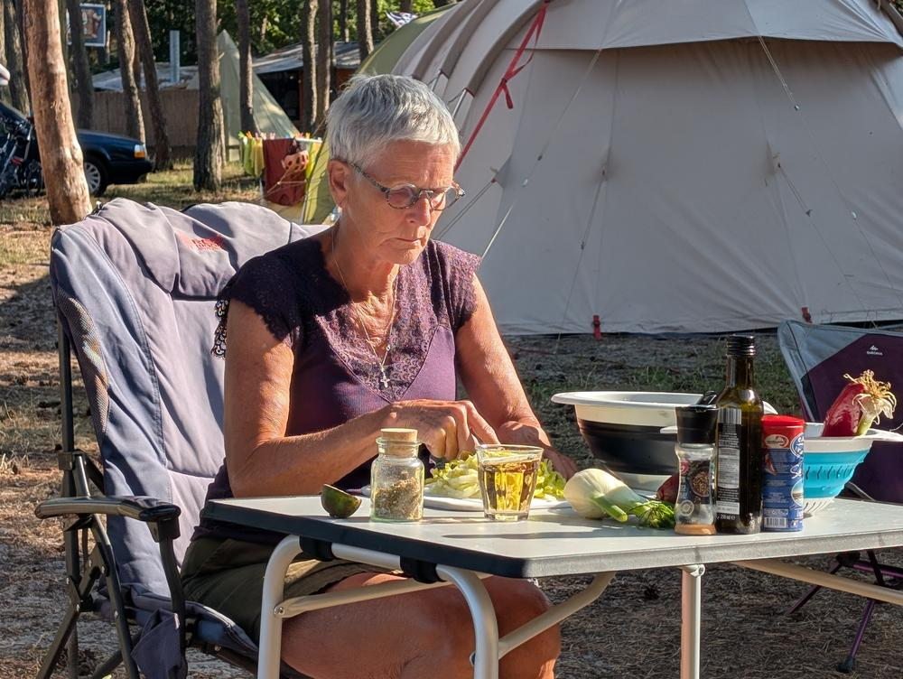
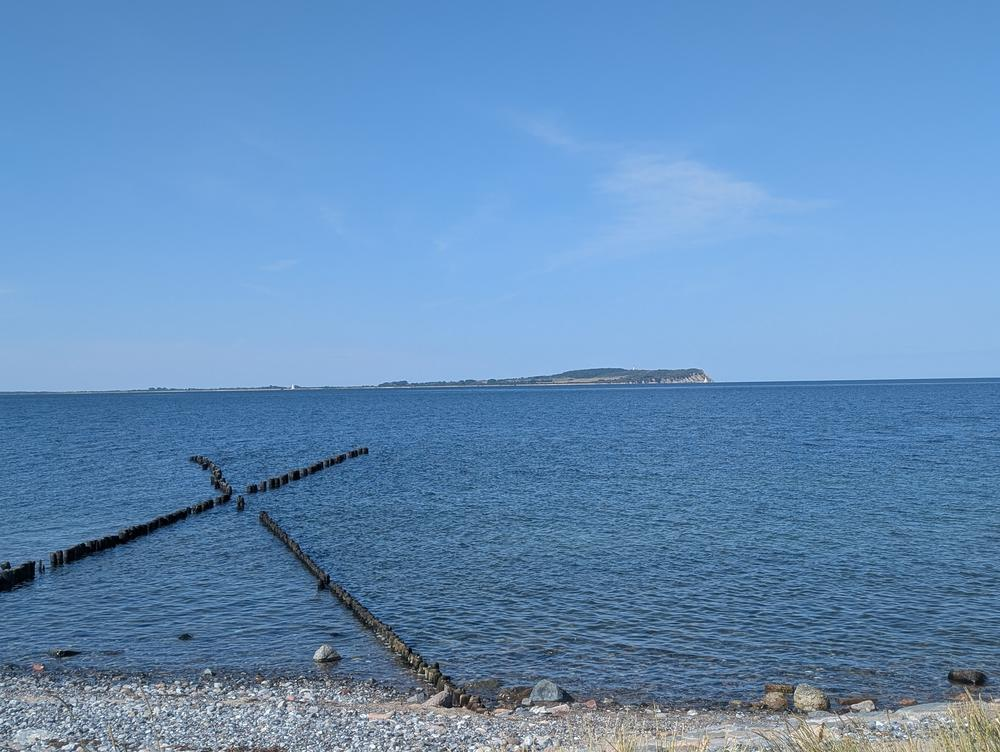
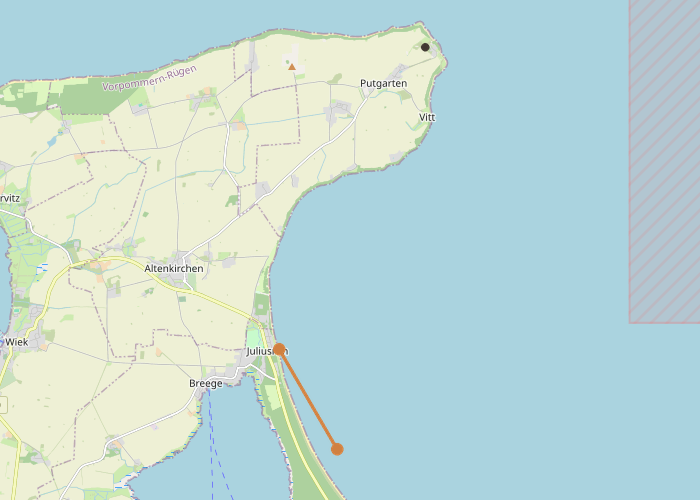
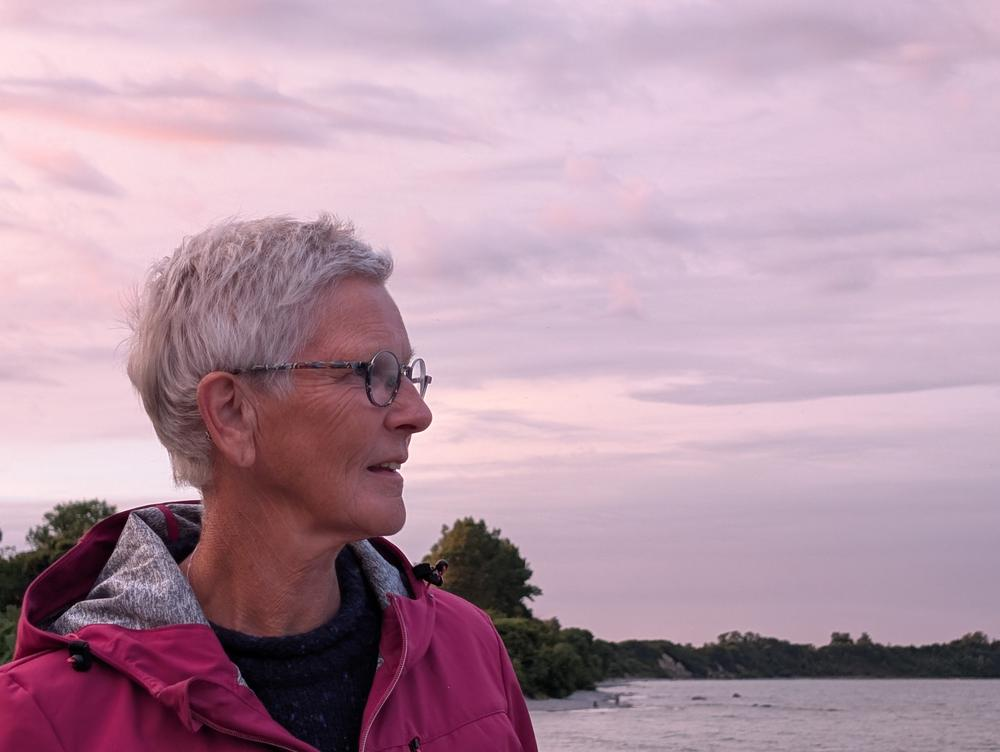

Het pad naar de camping liep door een strook dennenbos en eindigde op een open veld met zand en naalden. Een naturcamping op Noord-Rügen, tentjes verspreid tussen de zeegrenen. De grond bedekt met dennenappels. Iemand had een waslijn tussen twee stammen gespannen, ergens stond een fiets tegen een boom. Alles rook naar hars en zout.
Ik zette de tent op tussen twee dennen die net genoeg ruimte lieten voor de scheerlijnen. De hond onderzocht de omgeving in steeds grotere cirkels. Vanuit de hangmat was de zee niet te zien maar wel te horen — een constant, laag ruisen achter de bomen.
The path to the campsite ran through a strip of pine forest and ended on an open field of sand and needles. A nature campsite on northern Rügen, tents scattered between the coastal pines. The ground covered in pine cones. Someone had strung a clothesline between two trunks; somewhere a bicycle leaned against a tree. Everything smelled of resin and salt.
I pitched the tent between two pines that left just enough room for the guy ropes. The dog investigated the surroundings in widening circles. From the hammock the sea was invisible but audible — a constant, low murmur behind the trees.
De kunst van een volwaardige maaltijd op een kampeertafeltje. Mijn vrouw sneed een salade met avocado en verse kruiden, olijfolie uit de fles, een pot met specerijenmix van huis meegenomen. De camping had geen restaurant, wat een zegen bleek — het dwong ons om echt te koken in plaats van te bestellen.
De eenvoud van buiten eten in de avondzon. Het licht viel schuin door de dennen en legde strepen over de tafel. Een mug landde op de rand van mijn bord. Ik liet hem. Er was tijd genoeg.
The art of a full meal on a camp table. My wife cut a salad with avocado and fresh herbs, olive oil from the bottle, a jar of spice mix brought from home. The campsite had no restaurant, which turned out to be a blessing — it forced us to actually cook instead of ordering.
The simplicity of eating outside in the evening sun. Light fell at an angle through the pines and laid stripes across the table. A mosquito landed on the rim of my plate. I let it stay. There was time enough.


De Oostzee vanaf het strand bij de camping. Vijf minuten lopen over een zandpad, dan opende het bos zich en lag de zee er. Oud houten Buhnen staken schuin het water in — paalrijen van eikenhout die al meer dan een eeuw de kustlijn beschermen tegen erosie. Ze stonden er als vergeten hekken, half onder water, half boven.
Op de horizon de contouren van Kap Arkona, het noordelijkste punt van het eiland. Het water was onwaarschijnlijk blauw en stil, bijna meerlicht in plaats van zeelicht. Geen golven, alleen een trage deining die de natte zandrand op en neer bewoog.
The Baltic Sea from the beach near the campsite. Five minutes’ walk along a sandy path, then the forest opened and there was the sea. Old wooden groynes angled into the water — rows of oak posts that have protected the coastline from erosion for over a century. They stood there like forgotten fences, half submerged, half above.
On the horizon the outline of Kap Arkona, the island’s northernmost point. The water was improbably blue and still, almost lake-light instead of sea-light. No waves, only a slow swell moving the wet sand edge up and down.

“De Buhnen langs de kust van Rügen dateren uit de negentiende eeuw. Oorspronkelijk geplaatst om de kustlijn te beschermen tegen de erosie van de Oostzee, zijn ze inmiddels zelf een onderdeel van het landschap geworden.” “The groynes along Rügen’s coastline date from the nineteenth century. Originally placed to protect the shore from Baltic erosion, they have themselves become part of the landscape.”
Avond aan de kust. Het licht werd roze, dan lavendel. De wind viel weg alsof iemand een deur had dichtgedaan. Dit is het moment waarop een vakantie begint — niet bij aankomst, niet bij het opzetten van de tent, maar wanneer de tijd stopt met tellen.
Morgen de fietstocht door Jasmund, de krijtrotsen, het bos. Vanavond was er alleen dit: twee stoelen, een thermosfles thee, en een hemel die langzaam van kleur veranderde alsof hij nadacht over welke tint hij wilde dragen.
Evening on the coast. The light turned pink, then lavender. The wind dropped as if someone had closed a door. This is the moment a holiday begins — not on arrival, not when pitching the tent, but when time stops counting.
Tomorrow the cycling tour through Jasmund, the chalk cliffs, the forest. Tonight there was only this: two chairs, a thermos of tea, and a sky that slowly changed colour as if deciding what shade to wear.

Noord-Rügen — camping en strandNorthern Rügen — campsite and beach
